| FEM(Finite Element Method) - Truss Analysis |
|
I got the idea of this example from IFEM.Ch01.Slides.pdf, IFEM.Ch02.Slides.pdf, IFEM.Ch03.Slides.pdf (Try google these files and will get further details). The goal in this example is to show the process to construct the stiffness matrix for a simple truss as shown at the left side of the following illustration. You can replace each bar with a spring as shown in the right side of the following illustration. Now you have very similar model to the previous example. But there is very one important difference between this example and previous example. In previous example, we assumed that each node can move only in ONE direction. x direction (horizontal direction), but in this example we give each of the nodes one more freedom. Now each node can move in any way in two dimensional plane. It means the direction of the force applied to each node can be from anywhere in the plane, but as you know wherever the direction is we can describe the force with the two component of forces (horizantal force and vertical foruce) as marked below. "f" represents the force acting on each node and "u" represents the displacement of each nodes as result of the forces acting on the node.
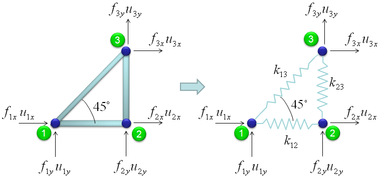
The force and stiffness matrix, displacement relationship is represented as follows and the goal in this example is to go through the steps to fill out the stiffness matrix (K matrix). You may feel a little strange because you have 6 x 6 matrix when you have only three nodes. According to the logic in previous example, you might expect that you would have 3 x 3 matrix since you have only three nodes. The reason why you have much larger matrix than the number of the nodes is that you have to describe the two directional forces for each node.
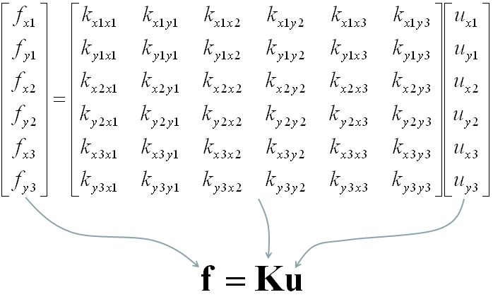
Overall procedure of realizing the matrix (stiffness matrix) is almost same as you saw in previous example. The first step is to split the whole system into each components. The first component is about the two nodes (node 1 and 2). As shown below, these two nodes are connected by single spring marked in red.
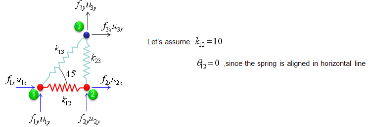
The stiffness values about this spring connecting these two nodes are described as below. (You can refer to the slides that I mentioned at the beginning to understand where these mathematical expression came from. Or just use these expressions).
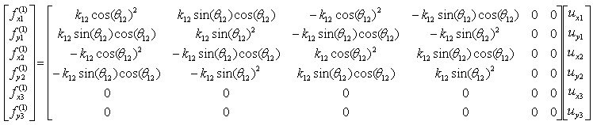
If we assume k12 to be 10 and the angle of the spring from the horizontal line is 0, you can have the following expression.
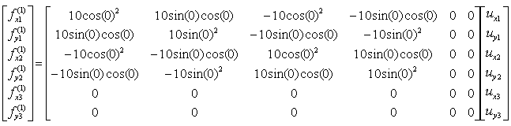
If you calculate the expressions shown above, you will have the following values.
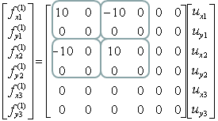
The second component is about the two nodes (node 2 and 3). As shown below, these two nodes are connected by single spring marked in red.
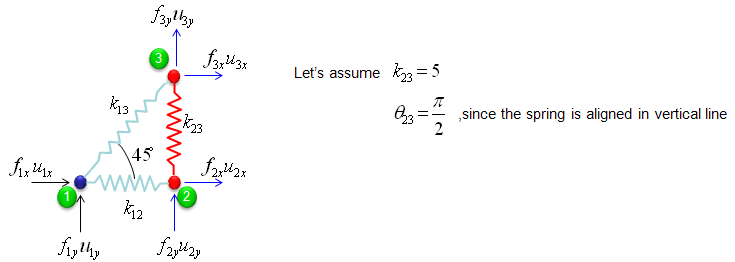
The stiffness values about this spring connecting these two nodes are described as below. (You can refer to the slides that I mentioned at the beginning to understand where these mathematical expression came from. Or just use these expressions).
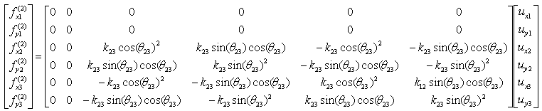
If we assume k23 to be 5 and the angle of the spring from the horizontal line is 90 degree (pi/2), you can have the following expression.
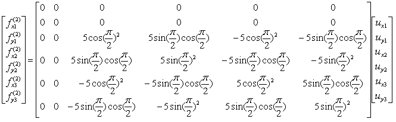
If you calculate the expressions shown above, you will have the following values.
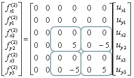
The third component is about the two nodes (node 3 and 1). As shown below, these two nodes are connected by single spring marked in red.
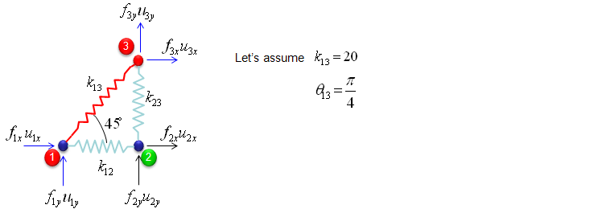
The stiffness values about this spring connecting these two nodes are described as below. (You can refer to the slides that I mentioned at the beginning to understand where these mathematical expression came from. Or just use these expressions).
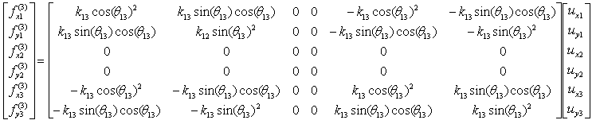
If we assume k13 to be 20 and the angle of the spring from the horizontal line is 45 degree (pi/4), you can have the following expression.
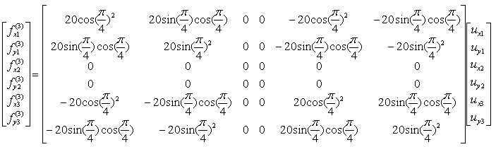
If you calculate the expressions shown above, you will have the following values.
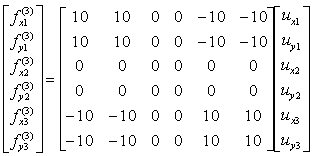
Through the three steps we have done above, you have three stiffness matrix describing each two nodes connected by each spring. The final step is to combine all of these matrix and get a single/combined stiffness matrix.
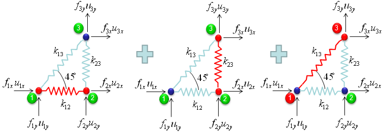
With summation of the three matrices that we got from previous steps,
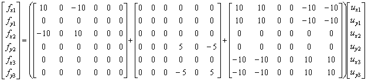
you would get the following single matrix.
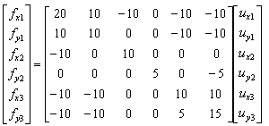
|